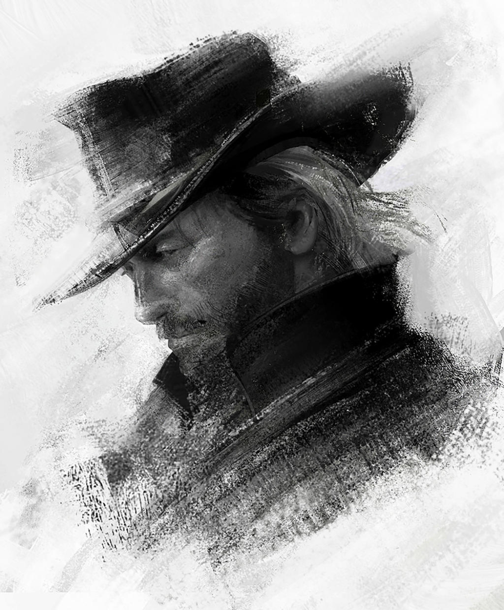
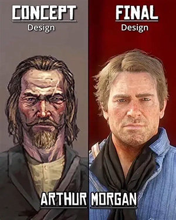
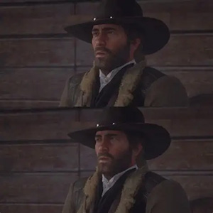

Fanart of Arthur Morgan
in the final design he's still looks tough but hes more approachable and charismatic. He also has a dry sense of humor and is ironiclly funny and sarcastic. he lost his son earlier in the final draft of his finished character which instead of anger being his driving force, its his guilt and blind loyalty to Dutch and his gang. In my opinion i belevie it was a smart move.

from contracting the disease he looks at his life and decison's more closely. as when he is confronted by his past mistakes and is forced to face them head on. guilt and a new sense of honour point him in the right direction. he does everything right by those he cares for and for those that were wronged by him or his gang. Eventually it leads in to his final resting place as he looks at his last sunrise before his final breath leaves him.
by no means is Arthur a saint. The game sets it up form the begining, he spent 20 years of his life robbing and killing for his gang. but he does have his soft and honurble momments, the game asks a very simple question for us. does current and your last momments matter. for me I believe the how you decide to leave this world is just as important, as the way you come into this world. For it shows who you really are underneath the dirt and grime. if you want a morw indepth take on this by Master Samwise And the Philosophy of gaming.
Take a Gamble That Love Exists- The Masculinity of Arthur Morgan